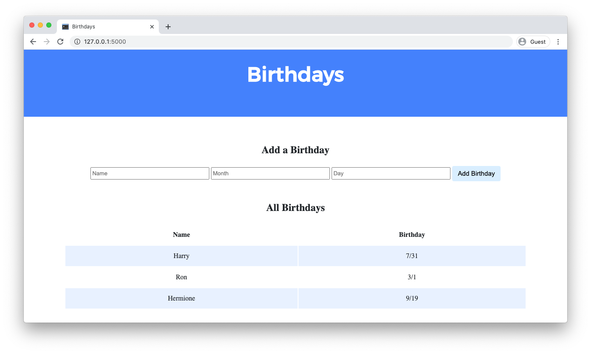

Lab 9: Birthdays
You are welcome to collaborate with one or two classmates on this lab, though it is expected that every student in any such group contribute equally to the lab.
Create a web application to keep track of friends’ birthdays.

When to Do It
By .
Getting Started
Here’s how to download this lab into your own CS50 IDE. Log into CS50 IDE and then, in a terminal window, execute each of the below.
- Execute
cdto ensure that you’re in~/(i.e., your home directory, aka~). - Execute
wget https://cdn.cs50.net/2020/fall/labs/9/lab9.zipto download a (compressed) ZIP file with this problem’s distribution. - Execute
unzip lab9.zipto uncompress that file. - Execute
rm lab9.zipfollowed byyesoryto delete that ZIP file. - Execute
ls. You should see a directory calledlab9, which was inside of that ZIP file. - Execute
cd lab9to change into that directory. - Execute
ls. You should see anapplication.pyfile, abirthdays.dbfile, astaticdirectory, and atemplatesdirectory.
Understanding
In application.py, you’ll find the start of a Flask web application. The application has one route (/) that accepts both POST requests (after the if) and GET requests (after the else). Currently, when the / route is requested via GET, the index.html template is rendered. When the / route is requested via POST, the user is redirected back to / via GET.
birthdays.db is a SQLite database with one table, birthdays, that has four columns: id, name, month, and day. There are a few rows already in this table, though ultimately your web application will support the ability to insert rows into this table!
In the static directory is a styles.css file containing the CSS code for this web application. No need to edit this file, though you’re welcome to if you’d like!
In the templates directory is an index.html file that will be rendered when the user views your web application.
Implementation Details
Complete the implementation of a web application to let users store and keep track of birthdays.
- When the
/route is requested viaGET, your web application should display, in a table, all of the people in your database along with their birthdays.- First, in
application.py, add logic in yourGETrequest handling to query thebirthdays.dbdatabase for all birthdays. Pass all of that data to yourindex.htmltemplate. - Then, in
index.html, add logic to render each birthday as a row in the table. Each row should have two columns: one column for the person’s name and another column for the person’s birthday.
- First, in
- When the
/route is requested viaPOST, your web application should add a new birthday to your database and then re-render the index page.- First, in
index.html, add an HTML form. The form should let users type in a name, a birthday month, and a birthday day. Be sure the form submits to/(its “action”) with a method ofpost. - Then, in
application.py, add logic in yourPOSTrequest handling toINSERTa new row into thebirthdaystable based on the data supplied by the user.
- First, in
Optionally, you may also:
- Add the ability to delete and/or edit birthday entries.
- Add any additional features of your choosing!
Walkthrough
Hints
- Recall that you can call
db.executeto execute SQL queries withinapplication.py.- If you call
db.executeto run aSELECTquery, recall that the function will return to you a list of dictionaries, where each dictionary represents one row returned by your query.
- If you call
- You’ll likely find it helpful to pass in additional data to
render_template()in yourindexfunction so that access birthday data inside of yourindex.htmltemplate. - Recall that the
trtag can be used to create a table row and thetdtag can be used to create a table data cell. - Recall that, with Jinja, you can create a
forloop inside yourindex.htmlfile. - In
application.py, you can obtain the dataPOSTed by the user’s form submission viarequest.form.get(field)wherefieldis a string representing thenameattribute of aninputfrom your form.- For example, if in
index.html, you had an<input name="foo" type="text">, you could userequest.form.get("foo")inapplication.pyto extract the user’s input.
- For example, if in
Not sure how to solve?
Testing
No check50 for this lab! But be sure to test your web application by adding some birthdays and ensuring that the data appears in your table as expected.
Run flask run in your terminal while in your lab9 directory to start a web server that serves your Flask application.
How to Submit
Execute the below, logging in with your GitHub username and password when prompted. For security, you’ll see asterisks (*) instead of the actual characters in your password.
submit50 cs50/labs/2021/x/birthdays